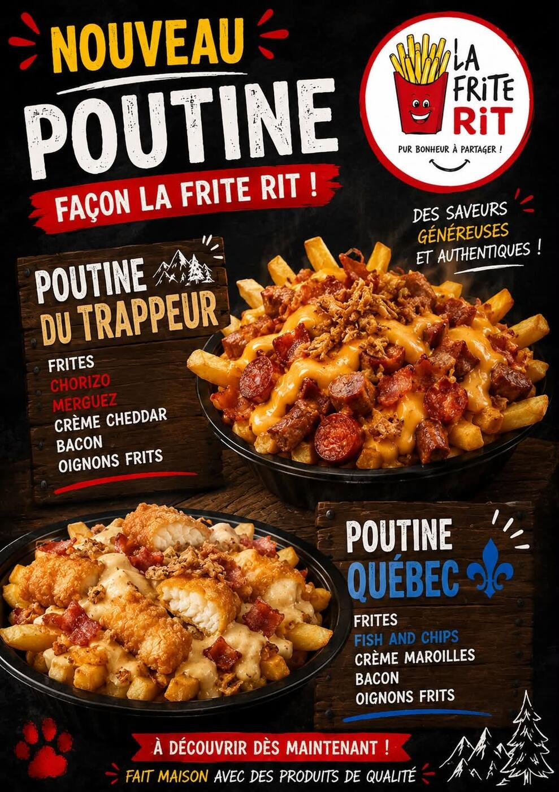

Burgers & poutines
Le snack-bar du 41 avenue des Plages, à Cucq, à quelques kilomètres du Touquet. Fait maison avec des produits de qualité.
Le snack-bar du 41 avenue des Plages, à Cucq, à quelques kilomètres du Touquet. Fait maison avec des produits de qualité.
Pain brioché, sauce burger, cornichons, confit d'oignons rouges, salade, tomates, maroilles
Pain brioché, sauce burger, confit d'oignons rouges, salade, tomates, cheddar, cornichons
Pain brioché, sauce burger, confit d'oignons rouges, salade, tomates, chèvre miel, bacon, cornichons
Pain brioché, sauce burger, cornichons, salade, tomates, oignons confits, poulet croustillant
Double steak, pain brioché, sauce burger, cornichons, oignons rouges, confit, galette de pomme de terre, salade, tomates
Pain brioché, sauce burger, cornichons, salade, tomates, confit d'oignons rouges, reblochon
Frites, sauce brune, bacon, cheddar, steak haché
Frites, sauce brune, bacon, steak haché, merguez
Frites, oignons frits, bacon, champignons, cheddar, effiloché de volaille
Frites, oignons frits, bacon, cheddar, steak haché, tenders de poulet
Frites, chorizo, merguez, crème cheddar, bacon, oignons frits, cheddar
Frites, fish and chips, crème maroilles, bacon, oignons frits
Et aussi : Ottawa, Edmonton, les sandwichs et américains, les frites petite ou grande, le menu P'tit Loup pour les enfants.

Des saveurs généreuses et authentiques. La Poutine du Trappeur (chorizo, merguez, crème cheddar) et la Poutine Québec (fish and chips, crème maroilles) : à découvrir dès maintenant.